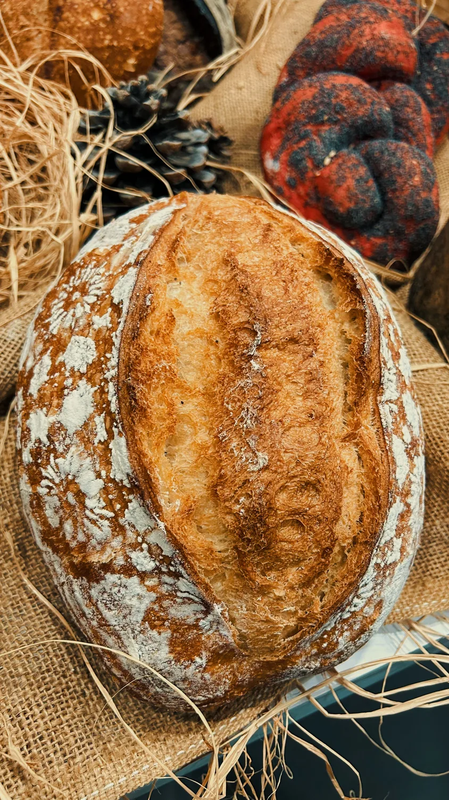

ELŐRENDELÉS / HOGYAN MŰKÖDIK
A kenyered várjon rád.
Egész kenyeret vagy tortát kérhetsz előre. Válassz, írd meg, mit és mikorra szeretnél. Mi visszajelzünk.

01 / FONTOS TUDNIVALÓK
Egy nappal előre szólj.
Egész kenyérre és tortára legalább egy nappal korábban fogadunk kérést. Az átvétel és a fizetés a boltban történik, keddtől szombatig 7:00 és 14:00 között.
Az űrlap elküldése után visszajelzünk, hogy vállalni tudjuk-e a rendelést. A kérés csak a visszaigazolásunk után válik elfogadott rendeléssé.
HOGYAN RENDELJ?
01 Válassz kenyeret vagy tortát.
02 Írd meg a mennyiséget és az átvétel napját.
03 Várd meg a visszajelzésünket.
02 / ELŐRENDELÉS
Írd meg a kérésed.
A csillaggal jelölt mezők kitöltése kötelező.